PCI-Geräte-Controller
Ein PCIDevice in SUSE® Virtualization stellt ein Host-Gerät mit einer PCI-Adresse dar.
Die Geräte können vom Hypervisor an eine VM durchgereicht werden, indem eine PCIDeviceClaim Ressource erstellt wird oder indem die Benutzeroberfläche verwendet wird, um Passthrough zu aktivieren. Das Durchreichen eines Geräts durch den Hypervisor bedeutet, dass die VM direkt auf das Gerät zugreifen kann und das Gerät effektiv besitzt. Eine VM kann sogar ihre eigenen Treiber für dieses Gerät installieren.
Dies wird durch die Verwendung des pcidevices-controller Add-ons erreicht.
Um die Funktion für PCI-Geräte zu nutzen, müssen die Benutzer zuerst das pcidevices-controller Add-on aktivieren.

Sobald das pcidevices-controller Add-on erfolgreich bereitgestellt wurde, kann es einige Minuten dauern, bis der Scan abgeschlossen ist und die PCIDevice CRDs verfügbar sind.
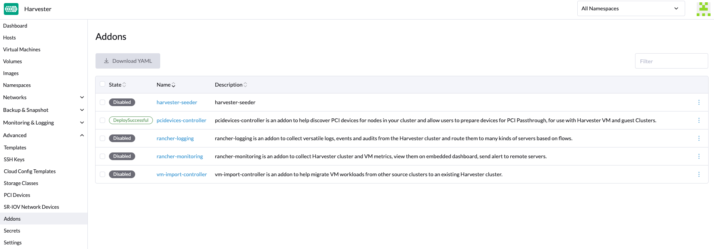
Passthrough für ein PCI-Gerät aktivieren
-
Gehen Sie jetzt zur
Advanced → PCI DevicesSeite: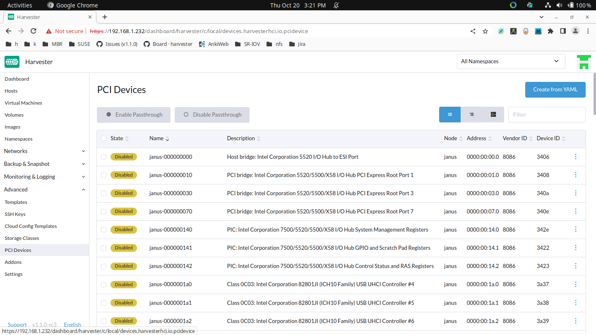
-
Suchen Sie Ihr Gerät nach dem Namen des Herstellers (z. B. NVIDIA, Intel usw.) oder nach dem Gerätenamen.
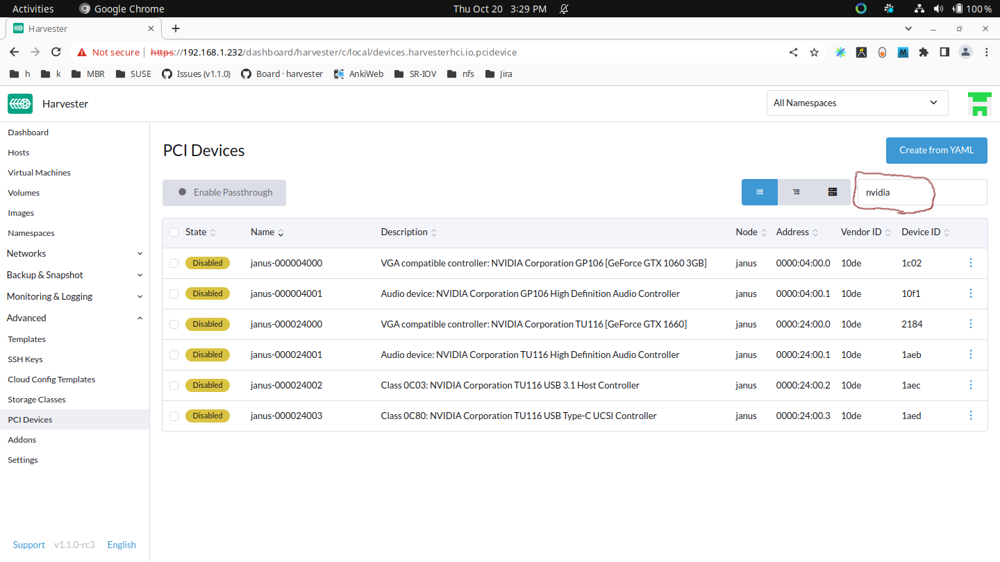
-
Wählen Sie die Geräte aus, die Sie für den Passthrough aktivieren möchten:
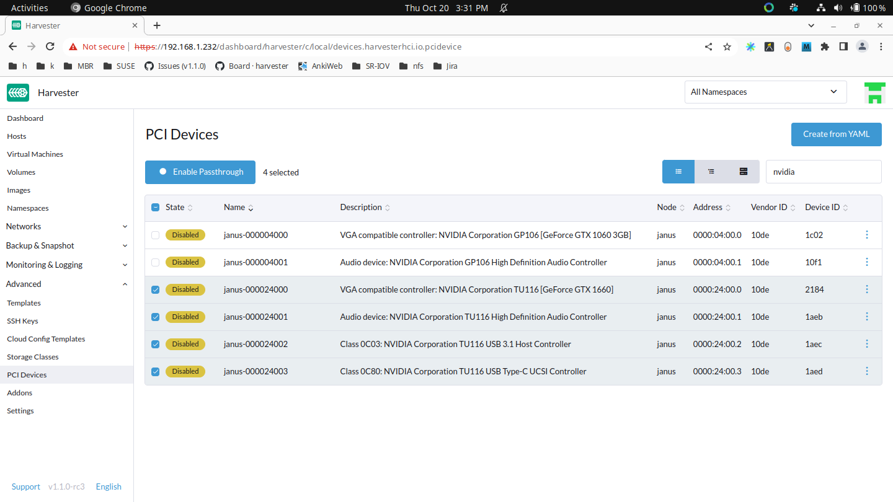
-
Klicken Sie dann auf Passthrough aktivieren und lesen Sie die Warnmeldung. Wenn Sie diese Geräte weiterhin aktivieren möchten, klicken Sie auf Aktivieren und warten Sie, bis alle Geräte
Enabledsind.Bitte verwenden Sie keine
host-ownedPCI-Geräte (z. B. Verwaltungs- und VLAN-NICs). Eine falsche Gerätezuweisung kann Schäden an Ihrem Cluster verursachen, einschließlich Knotenfehler.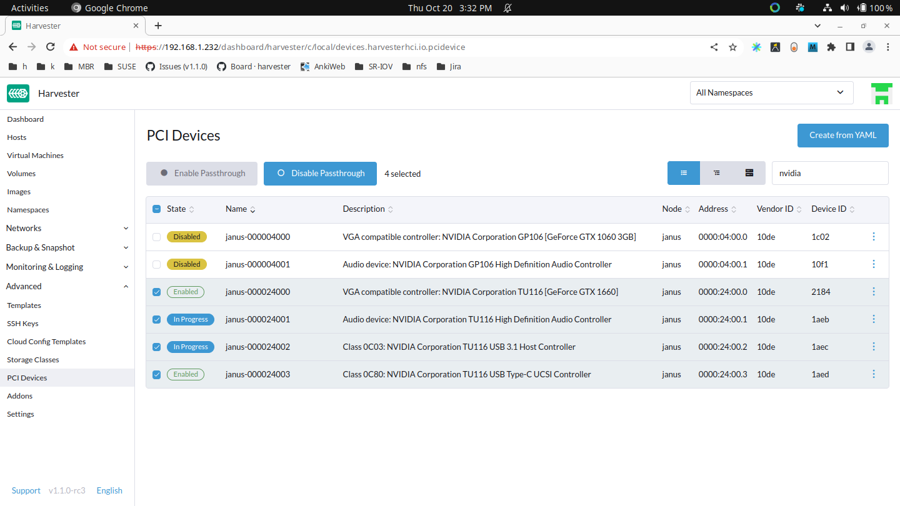
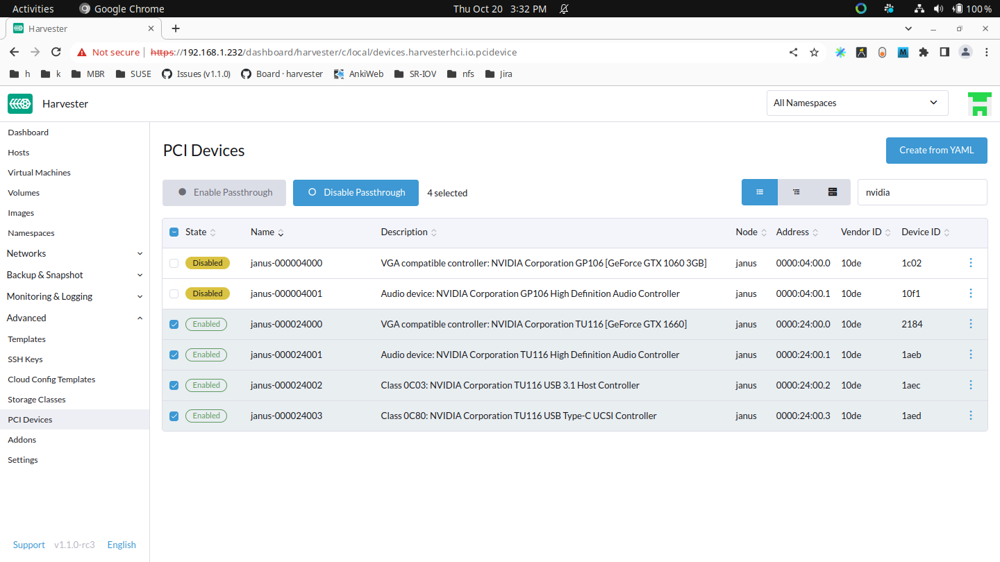
PCI-Geräte an eine VM anhängen
Nachdem Sie diese PCI-Geräte aktiviert haben, können Sie zur Virtuelle Maschinen-Seite navigieren und Konfiguration bearbeiten auswählen, um diese Geräte durchzureichen.
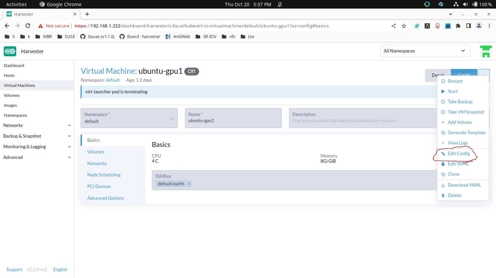
Wählen Sie PCI-Geräte aus und verwenden Sie das Verfügbare PCI-Geräte Dropdown-Menü. Wählen Sie die Geräte aus der angezeigten Liste aus, die Sie anhängen möchten, und klicken Sie dann auf Speichern.
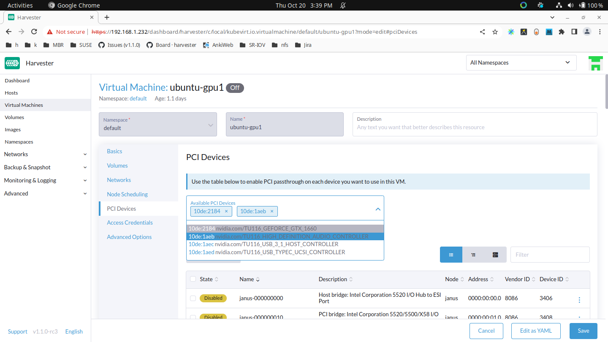
Verwendung eines durchgereichten PCI-Geräts innerhalb der VM
Starten Sie die VM und führen Sie lspci innerhalb der VM aus. Die angeschlossenen PCI-Geräte werden angezeigt, obwohl die PCI-Adresse in der VM nicht unbedingt mit der PCI-Adresse im Host übereinstimmt.
Treiber für Ihr PCI-Gerät innerhalb der VM installieren
Das ist genau wie die Installation von Treibern im Host. Die PCI-Passthrough-Funktion bindet das Host-Gerät an den vfio-pci-Treiber, was den VMs die Möglichkeit gibt, ihre eigenen Treiber zu verwenden.
Bekannte Probleme
-
Issue #6648: Eine virtuelle Maschine kann auf einem falschen Knoten geplant werden, wenn der Cluster mehrere Instanzen desselben PCI-Geräts hat.
Das pcidevices-controller-Add-on verwendet derzeit eindeutige Ressourcenbeschreibungen, um Geräte an den Kubelet zu veröffentlichen. Wenn mehrere PCIDeviceClaims desselben Gerätetyps im Cluster vorhanden sind, wird dieselbe eindeutige Ressourcenbeschreibung für diese PCIDeviceClaims verwendet, und daher kann die virtuelle Maschine auf einem falschen Knoten geplant werden. Um sicherzustellen, dass das richtige Gerät und der richtige Knoten verwendet werden, wählen Sie VM auf spezifischem Knoten ausführen, wenn Sie die Knotenplanung-Einstellungen konfigurieren.
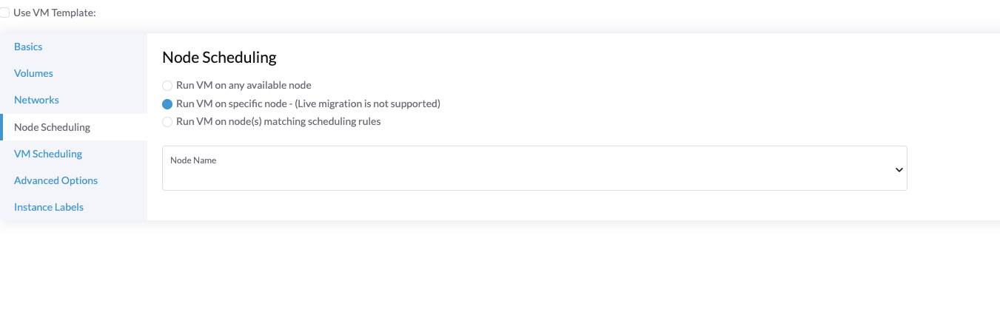
SR-IOV-Netzwerkgeräte
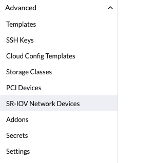
Das pcidevices-controller-Add-on kann jetzt Netzwerkschnittstellen auf den zugrunde liegenden Hosts scannen und überprüfen, ob sie SRIOV-Virtual Functions (VFs) unterstützen. Wenn ein gültiges Gerät gefunden wird, wird pcidevices-controller ein neues SRIOVNetworkDevice-Objekt generieren.
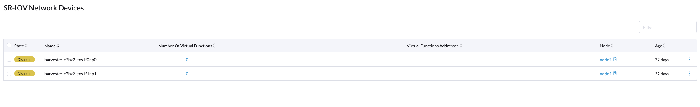
Um VFs auf einem SriovNetworkDevice zu erstellen, können Sie auf ⋮ → Aktivieren klicken und dann die Anzahl der virtuellen Funktionen definieren.
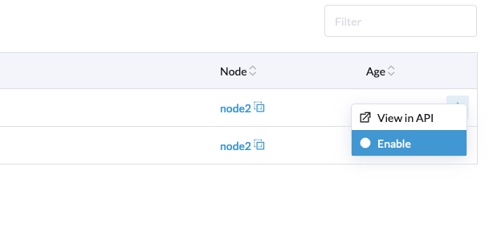
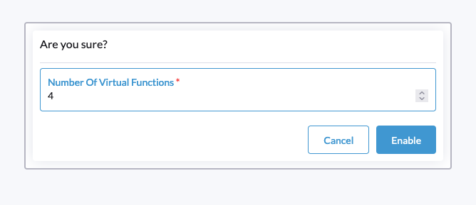
Das pcidevices-controller wird die VFs auf der Netzwerkschnittstelle definieren und den neuen PCI-Gerätestatus für die neu erstellten VFs melden.
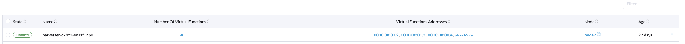
Beim nächsten erneuten Scan wird das pcidevices-controller die PCIDevices für VFs erstellen. Das kann bis zu 1 Minute dauern.
Sie können jetzt zur Seite PCI-Geräte navigieren, um die neuen Geräte anzuzeigen.
Wir haben auch einen neuen Filter eingeführt, um Ihnen zu helfen, PCI-Geräte nach der zugrunde liegenden Netzwerkschnittstelle zu filtern.
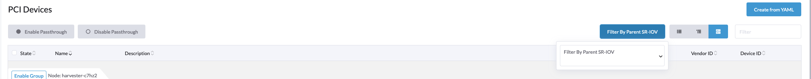
Das neu erstellte PCI-Gerät kann wie jedes andere PCI-Gerät an virtuelle Maschinen durchgereicht werden.
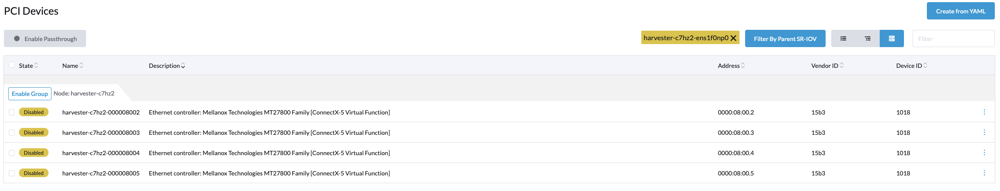
USB-Geräte
Eine USBDevice Ressource in Harvester stellt ein USB-Gerät auf dem Knoten dar. USB-Geräte können vom Hypervisor "durchgereicht" werden, um den direkten Zugriff von VMs zu ermöglichen. Dies wird durch das pcidevices-controller Add-on erreicht. Um USB-Passthrough zu verwenden, können Sie entweder eine USBDeviceClaim Ressource erstellen oder die Funktion in der Harvester-Benutzeroberfläche aktivieren.
USB-Passthrough unterscheidet sich leicht von PCI-Passthrough. Zum Beispiel können Sie einen USB-Controller mit vier USB-Ports vollständig steuern, indem Sie eine PCIDeviceClaim erstellen. Sie können jedoch auch eine USBDeviceClaim erstellen, um nur einen USB-Port zu steuern. Die anderen drei USB-Ports bleiben dem Knoten verfügbar.
|
Bevor Sie das USB-Gerät entfernen, trennen Sie es von der virtuellen Maschine und deaktivieren Sie dann das Passthrough auf dem USB-Geräte-Bildschirm. |
Aktivieren Sie Passthrough für ein USB-Gerät.
-
Gehen Sie in der Harvester-Benutzeroberfläche zu Erweiterte → USB-Geräte.
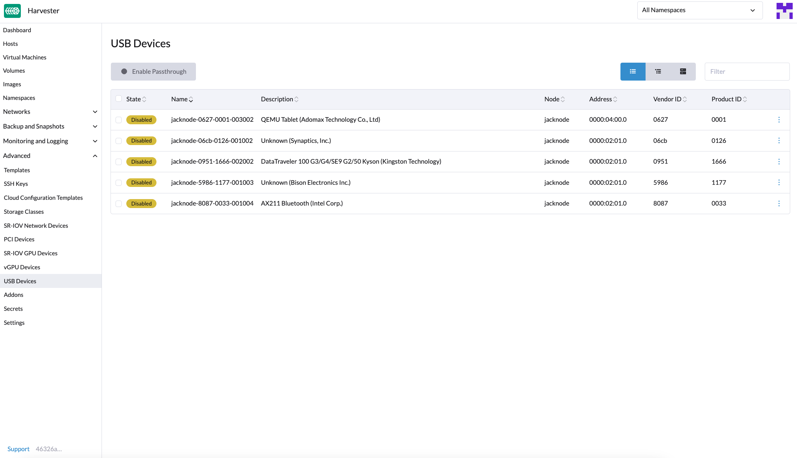
-
Suchen Sie das Gerät in der Liste.
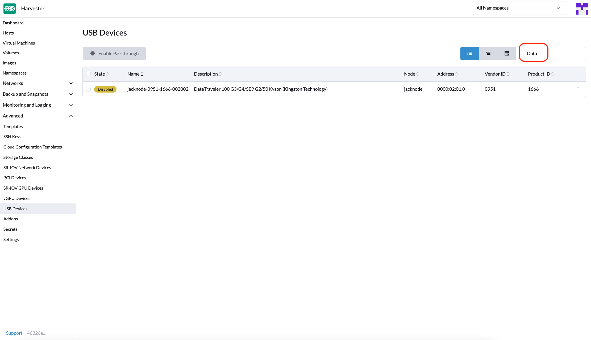
-
Wählen Sie das Zielgerät aus und wählen Sie dann ⋮ → Passthrough aktivieren.
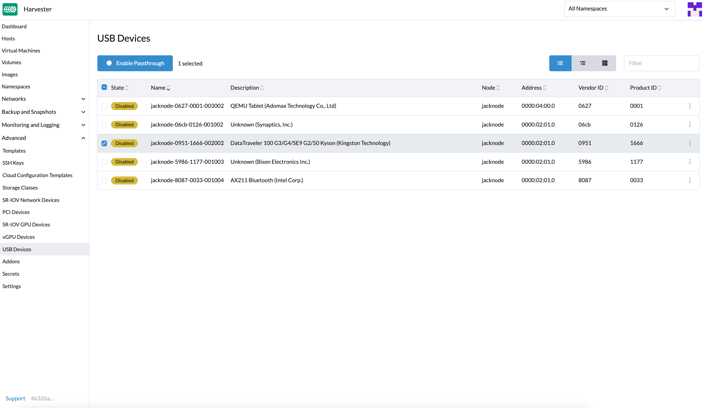
-
Lesen Sie die Bestätigungsnachricht und klicken Sie dann auf Aktivieren.
Lassen Sie etwas Zeit, damit sich der Gerätestatus auf Aktiviert ändert.
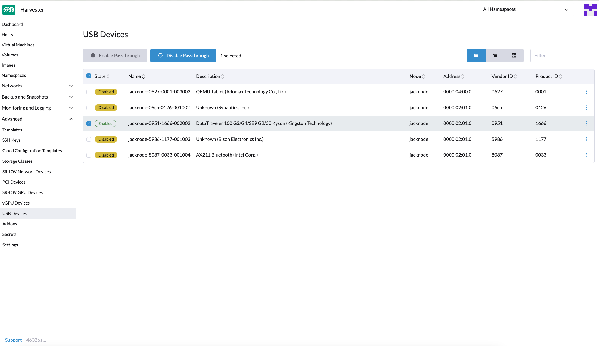
Schließen Sie ein USB-Gerät an eine virtuelle Maschine an.
-
Überprüfen Sie, ob das Passthrough für das Zielgerät aktiviert ist.
-
Gehen Sie zu Virtuelle Maschinen und erstellen Sie dann eine virtuelle Maschine oder bearbeiten Sie die Konfiguration einer vorhandenen virtuellen Maschine.
-
Gehen Sie auf dem Konfigurationsbildschirm der virtuellen Maschine zum Tab USB-Geräte und wählen Sie dann ein Gerät aus der Liste Verfügbare USB-Geräte aus.
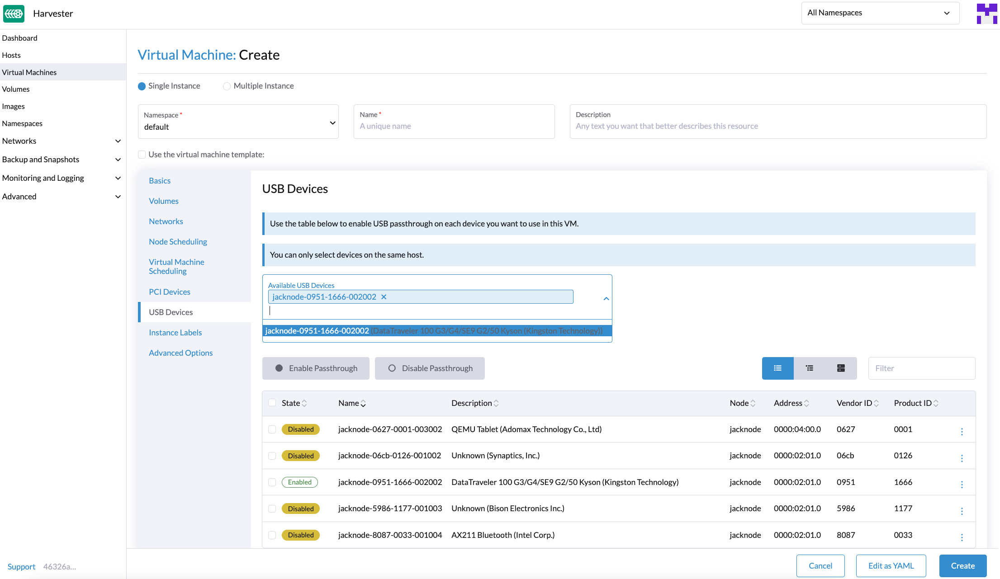
-
Klicken Sie auf Erstellen oder Speichern.
Anzeigen der an eine virtuelle Maschine angeschlossenen USB-Geräte.
-
Starten Sie die virtuelle Maschine und greifen Sie dann darauf zu.
-
Führen Sie
lsusb.Dieses Dienstprogramm zeigt Informationen über USB-Busse und angeschlossene Geräte an.
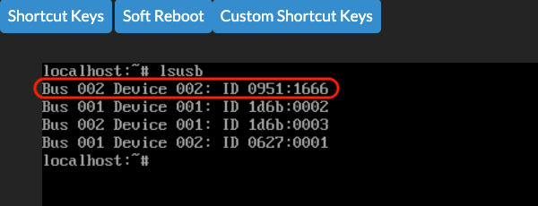
Nutzungsbeschränkungen
-
Virtuelle Maschinen mit angeschlossenen USB-Geräten können nicht live migriert werden, da die Geräte an einen bestimmten Knoten gebunden sind.
-
Das Hot-Plugging und erneute Anschließen von USB-Geräten wird nicht unterstützt. Für weitere Informationen siehe KubeVirt Issue #11979.
-
Wenn sich der Gerätepfad ändert, wenn Sie das Gerät wieder anschließen oder den Knoten neu starten, müssen Sie das Gerät von der virtuellen Maschine trennen und dann das Passthrough erneut aktivieren.